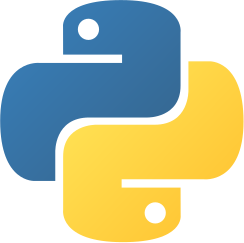

List comprehension#
Data en functies#
De compositie van data en functies
Data
[3, 4, 5, 6, 7, 8, 9]
en functies:
def sum(L):
...
def range(low, hi):
...
sum(L)#
def sum(L):
""" input: L, a list of #s
output: L's sum
"""
if len(L) == 0:
return 0.0 # base case
else:
return L[0] + sum(L[1:]) # recursive case
Hier zie je een recursieve implementatie van de ingebouwde Python functie sum. Om ons recursieve geheugen op te frissen, laten we nu proberen een recursieve implementatie te maken van de functie range.
Quiz#
Een recursive implementatie van de ingebouwde Python functie range
range(3, 7) == [3, 4, 5, 6]
range(3, 7, 2) == [3, 5]
range(low, hi)#
Wat is de recursive case?
def range(low, hi):
""" input: low and hi, integers
output: a list from low upto hi
"""
if low >= hi: # base case
return []
else: # recursive case?
return ...
Bedenk dat je lists kan “optellen”!
[3] + [4, 5, 6] == [3, 4, 5, 6]
Oplossing#
def range(low, hi):
""" input: low and hi, integers
output: a list from low upto hi
"""
if low >= hi: # base case
return []
else: # recursive case
return [low] + range(low + 1, hi)
Resultaat#
Onze recursieve functies sum en range in actie
sum(list(range(1, 101)))
5050
Data en functies combineren#
Verdubbel alle waarden in een list
Data
[8, 9, 10]
en functies
def dbl(x):
"""Verdubbel een getal
"""
return x * 2
combineren
[dbl(x) for x in [8, 9, 10]]
Variaties#
Variaties op het toepassen van een functie op de elementen in een list zijn mogelijk
L1 = list(map(dbl, range(6)))
L2 = [x * 2 for x in range(6)]
Vaak zul je zien (of zelf hebben bedacht) dat meerdere oplossingen mogelijk zijn. In het geval L2 kan je je afvragen of een functie nodig is, omdat het hier om gaat om een heel eenvoudige expressie (x * 2) die niet de moeite is deze als functie te schrijven. L1 gebruikt de ingebouwde functie map, die een functie toepast op elk element in een collectie.
List comprehension#
List
[0, 1, 2, 3, 4, 5]
List comprehension
[2 * x for x in [0, 1, 2, 3, 4, 5]]
Resultaat
[0, 2, 4, 6, 8, 10]
Iteratie#
Stap één voor één over waarden en pas een expressie toe
[ expressie voor elke waarde in collectie ]
[2 * x for x in [0, 1, 2, 3, 4, 5]]
x neemt elke waarde in de list aan waar de expressie 2 * x op wordt toegepast en op deze manier wordt iteratief wordt een nieuwe list opgebouwd. Hier wordt geen recursie meer toegepast maar wordt sequentieel de data doorlopen en handelingen op toegepast.
Conditioneel#
Stap voorwaardelijk één voor één over waarden en pas een expressie toe
[ expressie voor elke waarde in collectie als <test> ]
[10 * x for x in [0, 1, 2, 3, 4, 5] if x % 2 == 0]
Een list comprehension kan worden uitgebreid met een conditie waar de expressie zal worden toegepast alleen als de test slaagt voor de waarde van x.
Quiz#
Wat is het resultaat van de volgende list comprehensions
Vraag 1#
[n ** 2 for n in range(0, 5)]
Antwoord#
[0, 1, 4, 9, 16]
Vraag 2#
[42 for z in [0, 1, 2]]
Antwoord#
[42, 42, 42]
Vraag 3#
[z for z in [0, 1, 2]]
Antwoord#
[0, 1, 2]
Vraag 4#
[s[1::2] for s in ["elk", "ook", "vlo"]]
Antwoord#
["l", "o", "l"]
Vraag 5#
[a * (a - 1) for a in range(8) if a % 2 == 1]
Antwoord#
[0, 6, 20, 42]
Syntax!#
[x * 2 for x in [0, 1, 2, 3, 4, 5]]
Het lijkt op een wirwar van karakters en andere willekeurige tekens…
Maar de handeling die we willen uitvoeren is eenvoudig, namelijk het vermenigvuldigen van elke waarde in een lijst.
We weten nu ook dat het op deze wijze sequentieel toepassen van een expressie op elk element van een collectie (bijvoorbeeld een list) efficiënter is dan een recursive oplossing (althans voor de computer!). Maar je zal je misschien afvragen of deze syntax wel efficiënter is voor jou want het lijkt op het eerste gezicht moelijk te begrijpen.
We kunnen je verzekeren dat met oefening je deze notatie op een gegeven moment zal ook gaan waarderen al is het alleen maar omdat je complexe bewerkingen in een enkele regel kan schrijven.
Miljoen keer simuleren#
import sys
from random import *
def guess_np(hidden):
"""Raad een getal
hidden: het te raden getal
"""
comp_guess = choice(range(100)) # 0 tot en met 99.
if comp_guess == hidden: # base case
return 1
else: # recursive case
return 1 + guess_np(hidden)
Dit is dezelfde functie die je eerder hebt gezien om een getal te raden, maar zonder de print statements waar de computer ons enthousiast liet weten (printen!) dat het het getal had geraden. De functie geeft het aantal keer dat nodig is om een om een getal te raden terug op basis van steeds een random keus van de computer.
Combineren#
[ expressie voor elke waarde in collectie ]
LC = [guess_np(42) for x in range(1000)]
Eén enkele regel voor het uitvoeren van 1000 simulaties, dat is best indrukwekkend! Recursie hebben we op deze manier vervangen door iteratie (1000 frames minder op de stack) en Python vindt dit bijzonder prettig en wij ook, want we hebben snelheidswinst kunnen boeken.
Bedenk dat je niet verplicht bent de waarde x in een expressie te gebruiken. In dit geval is x een nutteloze variabele die je alleen maar nodig hebt omdat de syntax jou dit verplicht. Vaak zal je zien dat in dit soort gevallen _ wordt gebruikt om aan te geven dat het een “wegwerp” variabele is, bijvoorbeeld in ons geval
[guess_np(42) for _ in range(1000)]
LC[0:10]
[59, 203, 3, 32, 50, 275, 40, 142, 343, 26]
List slicing ken je nu ook en dit komt in dit geval goed van pas om eerste de 10 elementen (het resultaat van de eerste 10 simulaties) te inspecteren.
print("Gemiddeld aantal keer raden", sum(LC) / len(LC))
Gemiddeld aantal keer raden 98.811
De functie sum hebben we eerder geschreven in combinatie me de ingebouwde functie len kan het gemiddelde aantal keer raden worden berekend van deze simulatie!
Dubbele ogen#
from random import *
def count_doubles(N):
"""Tel aantal dubbele ogen bij N worpen
"""
if N == 0: # base case
return 0 # 0 worpen, 0 dubbele ogen...
d1 = choice([1,2,3,4,5,6]) # eerste dobbelsteen
d2 = choice([1,2,3,4,5,6]) # tweede dobbelsteen
if d1 != d2:
return 0 + count_doubles(N - 1) # niet gelijk
else:
return 1 + count_doubles(N - 1) # gelijk! tel 1 op
count_doubles(600)
90
LC = [count_doubles(600) for x in range(1000)]
LC[0:10]
[102, 105, 87, 90, 113, 88, 127, 81, 97, 88]
print("Gemiddeld dubbele ogen (/600):", sum(LC)/len(LC))
Gemiddeld dubbele ogen (/600): 99.885
De winnaar?#
 
Je hebt gezien dat we met Python efficiënt en met verassend weinig code simulaties kunnen laten uitvoeren. Deze flexibiliteit is onder andere waarom Python zo populair is in data science.
LCs gebruiken#
Scrabble score
def letter_score(s):
"""Scrabble letter score
"""
if s in "adeinorst":
return 1
elif s in "ghl":
return 2
elif s in "bcmp":
return 3
elif s in "jkuvw":
return 4
elif s == "f":
return 5
elif s == "z":
return 6
elif s in "xy":
return 8
elif s == "q":
return 10
else:
return 0
Het tellen van het aantal elementen in een lijst.
def fun1(L):
LC = [1 for x in L]
return sum(LC)
Kijk even goed naar wat hier gebeurt. Als L een list is dan zal in de functie LC een lijst opleveren met allemaal 1’en. Deze 1’en worden opgeteld door onze goede bekende sum en als resultaat teruggegeven.
fun1([7,8,9])
3
Optelling van Scrabble letter scores
def fun2(S):
LC = [letter_score(c) for c in S]
return sum(LC)
Je roept de functie letter_score aan voor elk karakter in de string S, en sum telt de scores bij elkaar op!
fun2("quiz")
21
Goede score!
Oneliners#
def len(L):
LC = [1 for x in L]
return sum(LC)
def len(L):
return sum([1 for x in L])
List comprehesion maakt het mogelijk om met een heel compacte syntax oplossingen te schrijven. Bedenk wel dat dit niet altijd de leesbaarheid ten goede komt en het is geen probleem om het in stukjes uit te schrijven, bijvoorbeeld door het gebruik van een variabele (LC in de eerste variant).
Condities#
List comprehension met condities
[ expressie voor elke waarde in collectie als <test>]
def vwl(s):
"""Tel het aantal klinkers
"""
LC = [1 for x in s ...]
return sum(LC)
De functie vwl telt klinkers in een woord. Dit is een mooi voorbeeld waar je een conditie moet gebruiken want niet ieder karakter is een klinker!
def vwl(s):
"""Tel het aantal klinkers
"""
LC = [1 for x in s if x in "aeiou"]
return sum(LC)
vwl("autobandventieldopje")
9
Alweer een goede score! Misschien kan jij een woord bedenken met nóg meer klinkers?
def count(e, L):
"""Tel het aantal e in L
"""
LC = [1 for x in L ...]
return sum(LC)
Een ander voorbeeld, tel het aantal elementen in de list L die gelijk is aan e.
def count(e, L):
"""Tel het aantal e in L
"""
LC = [1 for x in L if x == e]
return sum(LC)
count(42, [3, 42, 5, 7, 42])
2
Quiz#
Even getallen tellen#
def nodds(L):
LC = [... for x in L ...]
return sum(LC)
input:
L, een list met getallenoutput: het aantal oneven getallen in
L
Voorbeeld:
nodds([3, 4, 5, 7, 42]) == 3
Oplossing#
def nodds(L):
LC = [1 for x in L if x % 2 == 1]
return sum(LC)
nodds([3, 4, 5, 7, 42]) == 3
True
Zelfde waarden in twee lijsten#
def lingo(Y, W):
LC = [... for x in ... if ...]
return sum(LC)
input:
YenW, twee lijsten met “loterij” getallen (integers)output: het aantal getallen in
Ydat ook inWvoorkomt
Voorbeeld:
lingo([5, 7, 42, 47], [3, 4, 5, 7, 44, 47]) == 3
Tip: de in expressie kan hier handig zijn (x in W)
Oplossing#
def lingo(Y, W):
LC = [1 for x in Y if x in W]
return sum(LC)
lingo([5, 7, 42, 47], [3, 4, 5, 7, 44, 47]) == 3
True
Positieve delers#
def ndivs(N):
LC = [... for x in ... if ...]
return sum(LC)
input:
N, een integer >= 2output: het aantal positieve delers van
N
Voorbeeld:
ndivs(12) == 6
(de positieve delers van 12 zijn [1, 2, 3, 4, 6, 12])
Tip: gebruik range om een reeks getallen van 1 tot en met N te genereren
Oplossing#
def ndivs(N):
LC = [1 for x in range(1, N + 1) if N % x == 0]
return sum(LC)
ndivs(12) == 6
True
Priemgetallen#
Een uitdaging!
def primes_up_to(P):
LC = [... for x in ... if ...]
return LC
input:
Peen integer >= 2output: de lijst van priemgetallen tot en met
P
Voorbeeld:
primes_up_to(12) == [2, 3, 5, 7, 11]
Ter herinnering, een priemgetal is een heel getal dat precies door twee getallen kan worden gedeeld en waarmee je met de deling een heel getal overhoudt. Een priemgetal is altijd deelbaar door 1 en deelbaar door zichzelf.
Bijvoorbeeld het getal 5 heeft precies 2 delers, namelijk 1 en 5. Het getal 4 is geen priemgetal, 4 heeft namelijk 3 delers (1, 2 en 4). Tip: je kan in de conditie de functie ndivs gebruiken als in ndivs(x) == 2.
Oplossing#
def primes_up_to(P):
LC = [x for x in range(2, P + 1) if ndivs(x) == 2]
return LC
primes_up_to(12) == [2, 3, 5, 7, 11]
True
Dit is een goed voorbeeld van een probleem in kleinere stukken opbreken. De functie ndivs heeft een heel specifieke taak, maar in gecombineerd met het gebruik in primes_up_to kom je tot een krachtige oplossing. Dit principe van verdeel en heers wordt ook compositie genoemd.
In de herhaling#
Deze video herhaalt alles wat we tot nu met list comprehension hebben gedaan. Je zal ook een ander gebruik zien van for x in ... die een for each lus wordt genoemd. Met een sequentiële benadering van herhaling hebben we alvast een begin gemaakt dit concept te verkennen en we komen hier later uitgebreid op terug als we imperatief programmeren gaan verkennen, een ander programmeerparadigma.